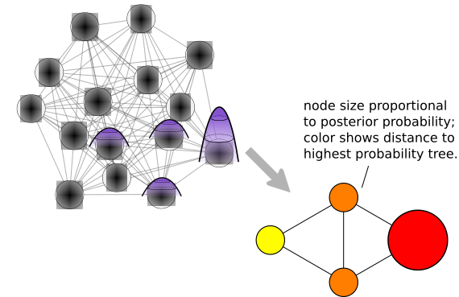

Phylogenetics methods
Erick Matsen
Thank you to: Trevor Bedford (Fred Hutch)
“data”: sequence alignment

A sequence alignment is not a fact
… it is a complex inference.
In phylogenetics, homology means..

Types of phylogenetic inference methods
- Distance-based
- Parsimony
- Likelihood-based
- Maximum likelihood
- Bayesian
Distance-based phylogenetics

Parsimony phylogenetics
Parsimony is based on Occam’s razor
Among competing hypotheses that predict equally well, the one with the fewest assumptions should be selected.
The next few slides are from Trevor Bedford.
Say we have three viruses 
Say we have three viruses 
We can explain these sequences with 3 mutations 
Parsimony suggests this topology requires 3 mutations at minimum 
Parsimony suggests both topologies equally tenable

Exercise: which topology is more parsimonious? 
Exercise: which topology is more parsimonious? 
Exercise: which topology is more parsimonious? 
Exercise: which topology is more parsimonious? 
Exercise: which topology is more parsimonious? 
Exercise: which topology is more parsimonious? 
Exercise: which topology is more parsimonious? 
Exercise: which topology is more parsimonious? 
Parsimony seems sensible.
Is it the most popular phylogenetics method?
No. There are situations in which the correct tree has more mutations.
Are we cooked?
Given enough data, likelihood methods will converge to the true tree.
Likelihood setup
- Come up with a statistical model of experiment
- Parametrize that model
- Evaluate likelihood under various parameter values
Example: picking peaches
Say that, after harvesting 20 peaches, we have 6 ripe ones.
Model using the binomial distribution. Say \(p\) is the probability of getting a ripe peach, and each draw is independent.
The likelihood of getting the observed result is \[
{ {20} \choose 6} \, p^6 \, (1-p)^{20-6}.
\] Recall: \({ {20} \choose 6}\) is the number of ways of choosing 6 items out of 20.
Peach picking likelihood surface

The maximum likelihood estimate of the parameter(s) of interest is the parameter value(s) that maximize the likelihood.
The maximum likelihood estimate of the parameter(s) of interest is the parameter value(s) that maximize the likelihood.

Fiddle with the dials until it looks good.
Questions
-
What is the maximum likelihood (ML) estimate of \(p\) given our experiment?
-
Would the result of this ML estimate be different if we got 60 ripe peaches out of 200?
-
Intuitively, would the shape of the likelihood curve be different with this larger dataset?
Likelihood recap
- Maximum likelihood is a way of inferring unknown parameters
- To apply likelihood, we need a model of the system under investigation
- In general, the “likelihood” is the likelihood of generating the data under the given parameters, written \(P(D | \theta),\) where \(D\) is the data and \(\theta\) are the parameters.
Setup for likelihood based phylogenetics
The phylogenetic likelihood of a tree is the likelihood of generating the observed data given that tree (under the sequence evolution model).

Note that the UW’s own Joe Felsenstein was the first to formalize this and develop efficient algorithms.
Sequence evolution models tell us the probability of seeing a certain mutation in some period of (evolutionary) time
- Nucleotide models are fit “on the fly”
- Protein models are typically pre-made
- e.g. JTT (Jones, Taylor, and Thornton), and WAG (Whelan and Goldman) matrices
- Codon models are a great idea
- Position matters!
- e.g. SRD06 model
Calculating likelihood of a single column

Likelihood of an alignment

The phylogenetic likelihood of a tree is the likelihood of generating the observed data given that tree (under the sequence evolution model)
- Maximum likelihood gives a point estimate
- Confidence is assessed using the bootstrap
- Lots of flexibility with models
\[
P(\theta \mid D) \propto P(D \mid \theta) P(\theta)
\]
The posterior probability of a tree is the probability that the observed tree is correct (given the model and priors)
- Bayesians sample from this posterior
- If you can deal with a prior, it’s the statistically right thing to do
- Sometimes we aren’t actually interested in the tree, so we can integrate it out
- But! Short alignment, 100 taxa = hours
Markov chain Monte Carlo

- If you jump to a better tree, accept that move
- If you jump to a worse tree, accept that move with a non-zero probability
- It’s all arranged so that you sample trees in proportion to their posterior probability
Subset to high probability nodes

Real tree spaces have bottlenecks

Whidden & M, Systematic Biology, 2015
Likelihood phylogenetics recap
- In likelihood phylogenetics, explicitly model mutation process
- This allows complex models to be used
- Statistical basis allows us to make formal statements about uncertainty
- But on the other hand our models are over-simple!
Crazy but typical model assumptions
- differences between sequences only appear by point mutation
- evolution happens on each column independently
- sequences are evolving according to reversible models (this excludes selection and directional evolution of base composition)
- the evolutionary process is identical on all branches of the tree
Software
- FastTree – approximate ML
- RAxML and PhyML – somewhat less approximate ML
- BEAST – Bayesian
- MrBayes – Bayesian
- many others, but these are the ones I know …